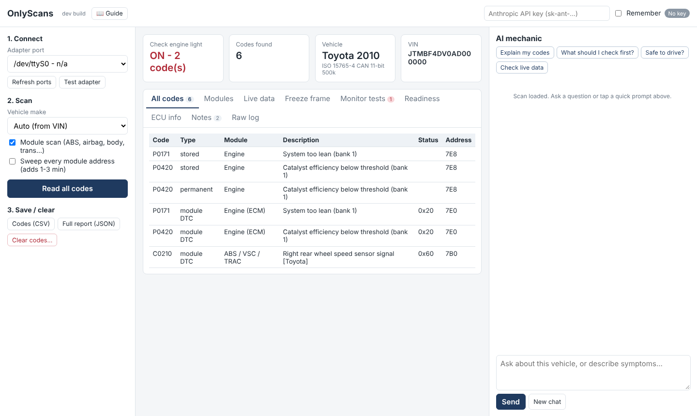

Plug in an OBD adapter, double-click, and read every code your car will give up: engine, ABS, airbag and body modules, plus live sensor data and the car's own self-tests. Then ask the AI mechanic what to check first.
⬇ Download for Windows View on GitHub
Stored, pending and permanent codes, plus codes straight from ABS, airbag, body, transmission and other modules on supported makes.
Every sensor the engine computer supports, the full freeze frame, readiness monitors, and Mode 06 test results with pass/FAIL and per-cylinder misfire counts.
Claude reads the whole scan and walks you through likely causes and tests in order. It can watch live data while you talk to it. It only reads: it never clears codes or commands anything.
Use a cheap vLinker/ELM327 adapter, or a J2534 tool such as the Mongoose-Plus, Ford VCM II, VCM 3 or VCMM, or Honda GNA600.
On launch it checks for a new version and updates itself with one click, after checking the download against GitHub's checksum.
Scanning needs no internet or account. Your data stays on your PC unless you ask the AI, which uses your own Anthropic API key.
OnlyScans.exe. Windows SmartScreen will warn because it isn't code-signed: click More info, then Run anyway.Built and tested with the Vgate vLinker FS USB (FTDI driver). OBDLink and other ELM327/STN adapters also work. Covers every OBD-II protocol, including older K-line and J1850 vehicles.
Opus IVS Mongoose-Plus (including the Toyota MFC3), Ford VCM II, VCM 3, VCMM, Honda GNA600 and other J2534 v04.04 devices. Install the tool's driver and it appears in the port list. Adds Ford MS-CAN modules on tools that support it. Not yet confirmed on physical J2534 hardware, so reports are welcome.
| Vehicle | Engine codes, live data, freeze frame, readiness | Module codes (ABS, airbag, body...) |
|---|---|---|
| Any make, 1996+ | Yes | Standard requests on CAN vehicles (about 2008+) |
| Toyota / Lexus / Scion | Yes | CAN: known module addresses. Older: blink-code steps shown |
| Honda / Acura | Yes | CAN: automatic module search |
| GM | Yes | CAN: automatic module search. About 1999–2007: experimental |
| Chrysler / Dodge / Jeep / Ram | Yes | CAN: automatic module search. About 2002–2007: experimental |
| Ford / Lincoln / Mercury | Yes | CAN: main-bus modules, plus MS-CAN comfort modules with a J2534 tool |
Full details are in the guide.
I fix cars for family and friends, and I didn't want to pay for expensive diagnostic tools. So I built OnlyScans, a quality scan tool for anyone who can afford an OBD-II adapter.
When you're fixing something yourself, you end up digging through technical service bulletins, forums and YouTube. A lot of that time goes to reading about problems you don't have, or to watching videos about the wrong engine. So I added an AI mechanic that already knows exactly what you're working on and what's wrong with it: your vehicle, your codes, your live data. Ask it a question and you get an answer about your car, not someone else's.
OnlyScans is free and open source, but tips and suggestions are welcome.
— Riley
Tip with Venmo
Scan with your phone's camera, tap the code on a phone, or send to @Riley-Fitting.
Suggestions or problems
Open an issue on GitHub.